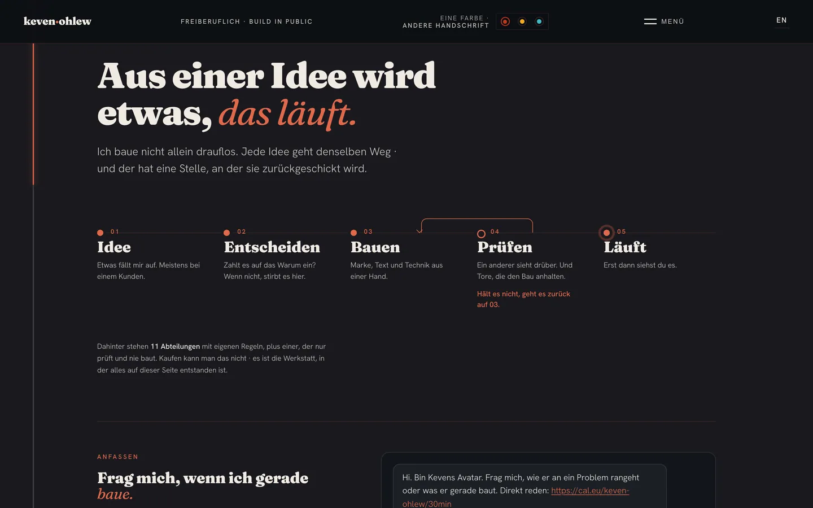
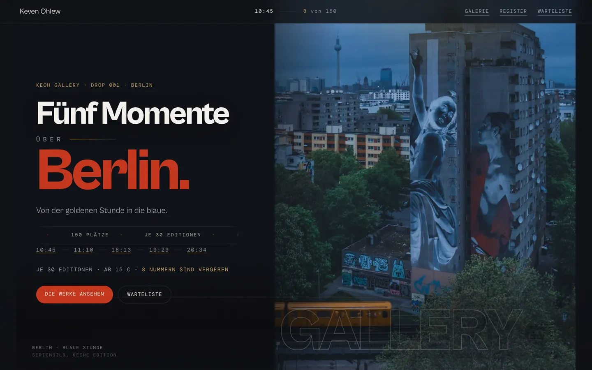
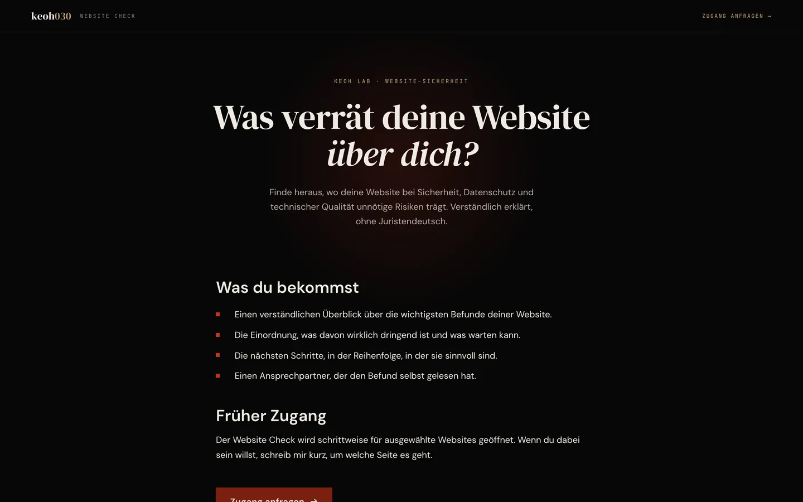

Website, Marke, Texte, Shop und die Papiere dahinter · von einer Person, aus einem Guss.
Die meisten, die bei mir landen, sind nicht ratlos, sondern überrollt. Zu viele Werkzeuge, zu viel Tempo, zu wenig Zeit. Ich zeige dir den ersten Schritt und gehe ihn mit. Deshalb steht hier nichts, was ich nicht zeigen kann.
Nicht: ich kann viel. Sondern: ich verkaufe dir nichts, was ich nicht selbst benutze.
Meine eigene Marke besteht aus Website, Shop mit echter Kasse, Verlag, Brand Book, Farbsystem, Rechtstexten und den Automationen dahinter. Alles von einer Person, alles verbunden. Die Alternative sind vier Dienstleister, vier Rechnungen und am Ende passt nichts zusammen.
Was ich bei dir baue, habe ich vorher bei mir selbst gebaut. Wer eine Gallery mit echter Kasse verkauft, hat selten selbst eine. Wer ein Fotografen-Betriebssystem anbietet, ist selten selbst Fotograf. Ich bin beides.
Wenn du nach dem Erstkontakt merkst, dass ich der Falsche bin, sage ich es dir selbst. Was ich nicht kann: etwas versprechen. Das ist der Grund, warum man mir das Übrige glaubt.

Eine Person, sieben Baustellen gleichzeitig. Jede Entscheidung lag in meinem Kopf, jeder Fehler wiederholte sich, weil nichts davon aufgeschrieben war.
Nicht die fehlende Zeit. Es fehlte ein System, das Regeln durchsetzt statt sie zu ermahnen · und das prüft, bevor etwas nach außen geht.
Verworfen: eine Sammlung von Notizen und guten Vorsätzen. Gebaut: elf Abteilungen mit eigenen Regeln, ein Prüfer, der nichts baut, und Tore, die den Bau anhalten statt zu mahnen. Was nicht hält, geht zurück.
Läuft seit dem 18. Juli. Alles auf dieser Seite, auf keven-ohlew.com und in 9 Werkstücken ist damit gebaut worden.
SIEHE KEVEN-OHLEW.COM
Beweist, dass ich Kasse, Lieferung und Recht selbst zum Laufen bringe. Verworfen wurde der Weg über einen fertigen Shop-Baukasten: er hätte die Lieferung digitaler Abzüge und die Rechtstexte nicht abgedeckt.
FALL LESEN →Beweist, dass ich Risiko sehe, wo andere Design sehen. Der Check nennt, was an einer Seite rechtlich, technisch und im Verkaufsweg offen ist, bevor irgendwer über Farben redet.

Vier Schritte. Du siehst jeden davon, während er passiert. Am Ende gehört dir alles.
Dreissig Minuten, kostenlos. Du erzählst, was du vorhast. Ich sage dir ehrlich, ob ich der Richtige bin.
Schriftlich, vor dem Start. Kein Stundenzettel, keine Nachforderung für das, was vereinbart war.
Du siehst jeden Schritt, während er entsteht. Nicht erst die fertige Präsentation am Ende.
Code, Zugänge und Konten laufen auf deinen Namen. Ohne mich weiterarbeiten können ist Teil der Lieferung.
Dann sage ich es im Erstgespräch, nicht nach der Rechnung. Passt es später nicht mehr, wird beendet, was bezahlt ist, und du behältst alles Fertige.
Dir. Code, Zugänge, Konten und Dateien. Nichts hängt an einem Vertrag mit mir.
Kleine Änderungen kannst du selbst machen, dafür ist es so gebaut. Für alles andere gibt es vorher einen Preis, nie eine offene Rechnung.
Ich habe gelernt, wie man einen Abend rettet, wenn die halbe Karte fehlt und der Gast trotzdem zufrieden gehen soll. Wer aus dem Service kommt, denkt vom Gast her, nicht vom Werkzeug.
Achtzehn Jahre in der Gastronomie, danach dasselbe Prinzip in Software: erst der Mensch, der etwas braucht, dann die Struktur darunter. Was ich kann, ist Menschen das Gefühl geben, dass schwierige Dinge lösbar sind. Dafür baue ich Systeme, die Zeit zurückgeben · meine und deine.
Ich arbeite allein. Grosse Umbauten dauern bei mir länger als bei einer Agentur mit sechs Leuten.
Ich bin kein Anwalt und kein Steuerberater. Die Vorlagen, die ich baue, ersetzen keine Beratung.
Einige meiner Produkte sind jung. Wo etwas noch Baustelle ist, sage ich es vorher.
Alles auf dieser Seite ist selbst gebaut und läuft live. Die Zahl der Änderungen wird bei jedem Bau neu gezählt: wird beim Bau eingesetzt. Nichts davon musst du verstehen. Es steht hier, damit du nachsehen kannst, ob stimmt, was ich sage.
Du erzählst, was du vorhast. Ich sage dir ehrlich, ob ich der Richtige bin. Wenn nicht, sage ich dir, wer es sein könnte.